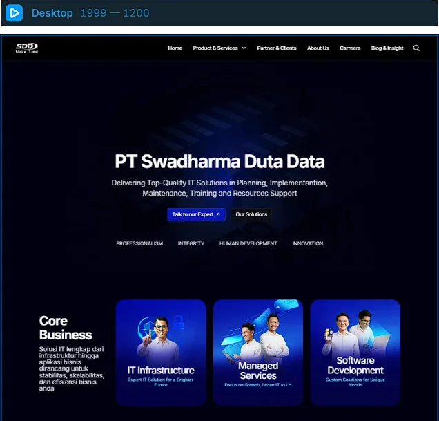
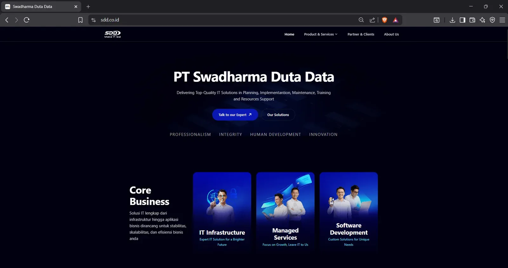
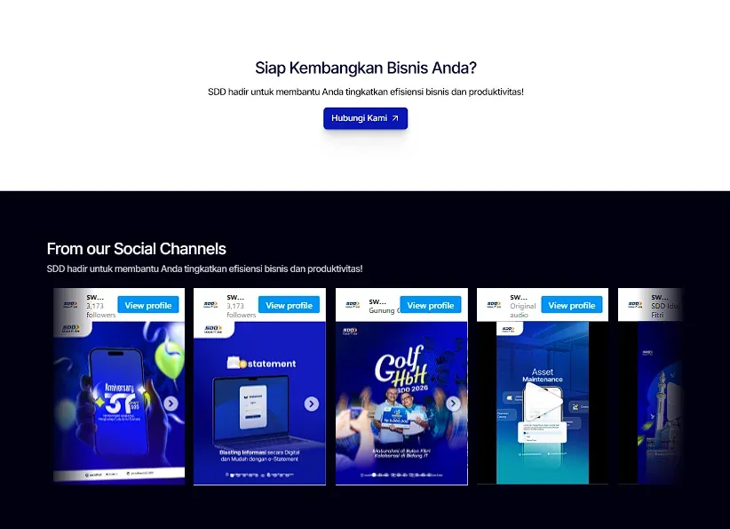

2026 · Product designservice platform
Customer and guru journeys designed across web and mobile with state-aware actions and clear service-specific information.
A web and mobile service platform connecting devotees and gurus through bookings, puja, yatra, consultations, commerce, livestreams, messaging, verification, and profile management.
The Vedic Sewa combines spiritual-service booking, guru discovery, commerce, live sessions, messaging, and account management in one product ecosystem.
My work focused on connecting service-specific booking flows with clear status, commerce, guru trust, live sessions, messaging, policy content, and profile management across web and mobile.

Customer and guru journeys designed across web and mobile with state-aware actions and clear service-specific information.
The product needed clarity across several connected but very different workflows.
After booking, customers need to know the current status, the next action, and the information required for that specific service mode.
Customers compare gurus, buy products, request returns or refunds, join livestreams, and use service-linked conversations—each with its own states and actions.
Guru assignments, earnings, credentials, verification, notifications, and customer profiles need a consistent structure across web and mobile.
Create a clear service lifecycle where devotees can book and follow services confidently while gurus can manage work and credentials in one place.
The designed solution organizes service-specific booking, status, commerce, guru trust, live sessions, messaging, and support into connected flows.
Booking detail pages and cards change actions according to status, while one booking stepper adapts to online, recorded, in-person, and temple-based services.
Shop, cart, order status, returns, refunds, replacements, ratings, and reviews are designed as a full lifecycle rather than checkout alone.
Guru assignments, earnings, livestream links, documents, and verification states are grouped into a clearer workspace with visible feedback.


The system also accounts for the states around verification, communication, support, and account security.
Customer and guru profile areas are designed to stay consistent across web and mobile while adapting to the available space.
Responsive product systemThe design includes empty, pending, locked, rejected, error, reminder, and confirmation states so important transitions are visible rather than implicit.
Designed state coverage